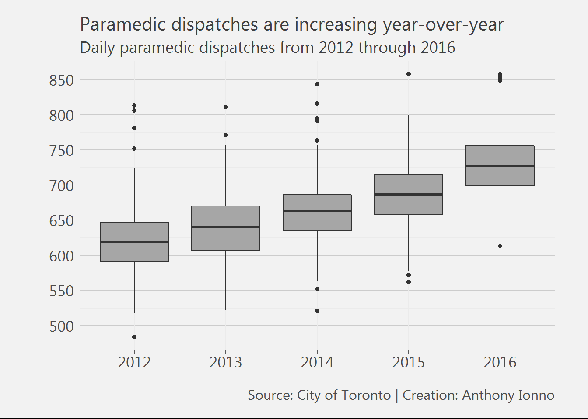
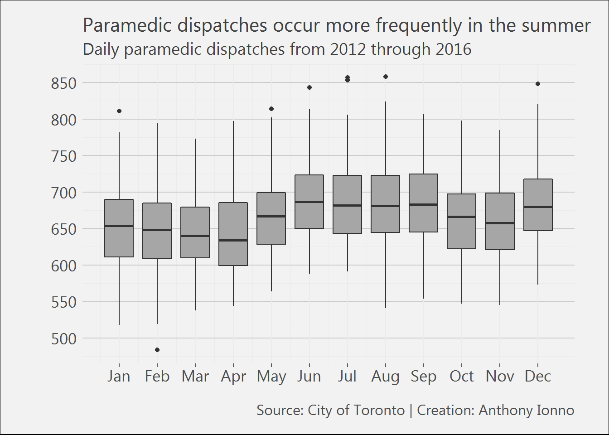
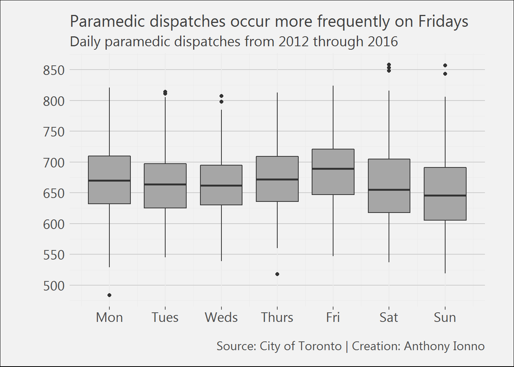

The City of Toronto’s open data website contains information on incidents to which Toronto Paramedic Services responds, including the general incident type, priority and number of units arrived at scene. The data-set spans from 2012 through 2015 and contains 1,217,830 rows.
In this post the daily count of incidents, to which paramedics respond to, is analysed and broken down by year, month, and day of week variables. Three observations are identified from this analysis:
The raw data used in this analysis can be located on the City of Toronto’s open data website. A processed version of the raw data that contains the updated variables used in the analysis below can be located on my github page.
The following libraries were loaded into my R workspace for this analysis.
library(tidyverse);library(magrittr);library(car);
library(GGally);
library(extrafont);
library(readxl)The data on the city of Toronto’s website is transformed into a single file with daily incident counts.
Ystart<-2012
Yend<-2016
for(i in Ystart:Yend){assign(paste("incidentdata",i,sep=""),read_excel("Data/TPS Incident Data_2012-2016.xlsx",sheet = paste(i)))}
# The individual data frames are combined, new temporal variables are created and used to create a daily incidence count variable.
incidentdata_allyears<-rbind(incidentdata2012, incidentdata2013, incidentdata2014, incidentdata2015, incidentdata2016)
names(incidentdata_allyears)[2]<-"Date"
incidentdata_allyears<-incidentdata_allyears %>%
mutate(Date=as.Date(Date),Year=format(Date,"%Y"),Month=format(Date,"%m"),Dayofweek=format(Date,"%u")) %>%
group_by(Date,Year,Month,Dayofweek) %>%
summarise(Count=n())
# Last row is removed due to ambiguity
incidentdata_allyears<-incidentdata_allyears[-1827,] Three figures are made from the transformed data and correspond to the three observations made in the summary section.
# A custom theme is defined
theme_ai <- function(){
theme_minimal() +
theme(
text = element_text(family = "Segoe UI", color = "gray25"),
plot.title = element_text(size=16),
plot.subtitle = element_text(size = 14),
axis.text = element_text(size=13),
plot.caption = element_text(color = "gray30", size=12),
plot.background = element_rect(fill = "gray95"),
plot.margin = unit(c(5, 10, 5, 10), units = "mm"),
#axis.line = element_line(color="gray50")
axis.ticks.x = element_line(color="gray35"),
panel.grid.major.y = element_line(colour = "gray80"))
}
# Daily incident count is plotted against a year factor variable
ggplot(filter(incidentdata_allyears,Count>200),aes(x=as.factor(Year),group=Year,y=Count))+
geom_boxplot(fill='gray65')+
labs(title="Paramedic dispatches are increasing year-over-year",
subtitle="Daily paramedic dispatches from 2012 through 2015",
x="",
y="",
caption="Source: City of Toronto | Creation: Anthony Ionno")+
xlab("")+
ylab("")+
theme_ai()+
scale_y_continuous(breaks=seq(0,900,50))
# Daily incident count is plotted against a monthly factor variable
ggplot(filter(incidentdata_allyears,Count>200),aes(x=as.numeric(Month),group=as.numeric(Month),y=Count))+
geom_boxplot(fill='gray65')+
labs(title="Paramedic dispatches occur more frequently in the summer",
subtitle="Daily paramedic dispatches from 2012 through 2015",
x="",
y="",
caption="Source: City of Toronto | Creation: Anthony Ionno")+
theme_ai()+
scale_x_continuous(breaks=seq(1,12,1),labels = c("Jan","Feb","Mar","Apr","May","Jun","Jul",
"Aug","Sep","Oct","Nov","Dec"))+
scale_y_continuous(breaks=seq(0,900,50))
# Daily incident count is plotted against a weekday factor variable
ggplot(filter(incidentdata_allyears,Count>200),aes(x=as.numeric(Dayofweek),group=as.numeric(Dayofweek),y=Count))+
geom_boxplot(fill='gray65')+
labs(title="Paramedic dispatches occur more frequently on Fridays",
subtitle="Daily paramedic dispatches from 2012 through 2015",
x="",
y="",
caption="Source: City of Toronto | Creation: Anthony Ionno")+
theme_ai()+
scale_x_continuous(breaks=seq(1,7,1),labels = c("Mon","Tues","Weds","Thurs","Fri","Sat","Sun"))+
scale_y_continuous(breaks=seq(0,900,50))